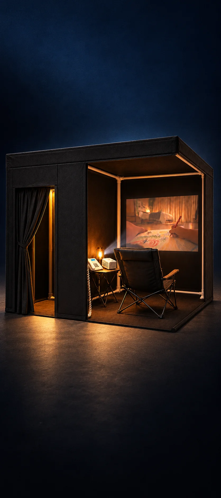
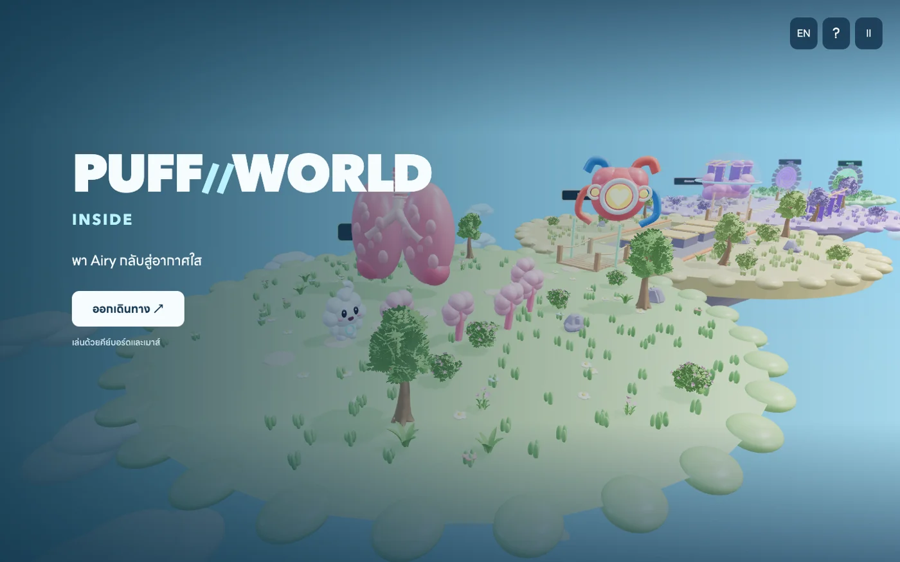
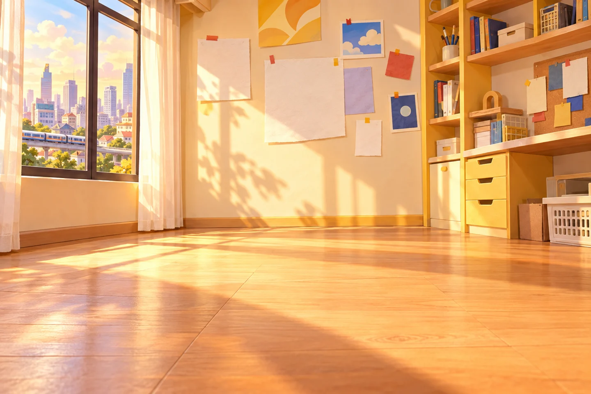
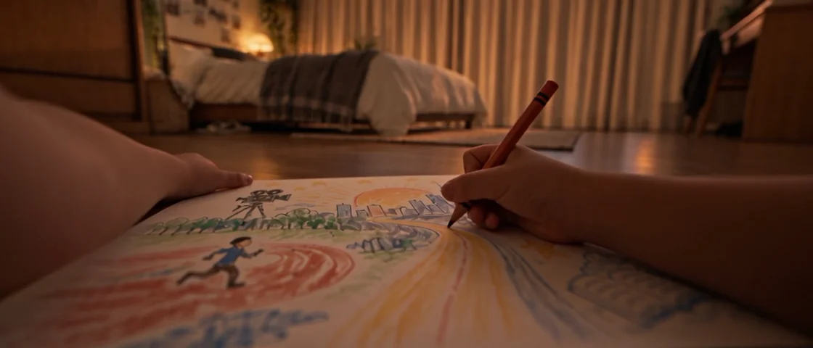

RE:Light Education
เว็บการเรียนรู้ · เกมสถานการณ์ · กำแพงคำตอบ

ภาพจำลองการออกแบบห้องแอป Mac · 2.1.1 · Apple silicon · macOS 14+
.dmg · 125.6 MB · ไม่ต้องสมัครบัญชี
เปิด .dmg → ลากแอปไป Applications → เปิดแอป แอปรุ่นนี้ยังไม่ notarized หาก macOS บล็อก ให้เปิด System Settings → Privacy & Security → Open Anyway หลังตรวจสอบว่าไฟล์มาจากหน้านี้
เข้าเว็บ หรือเก็บไว้เปิดบนเครื่องคุณ
เว็บการเรียนรู้ · เกมสถานการณ์ · กำแพงคำตอบ

เกมผจญภัย 3D · ใช้คอมพิวเตอร์
5 เกมทดลอง · มือถือ / คอมพิวเตอร์

3 เกมรุ่นแรก · มือถือ / คอมพิวเตอร์

เว็บไซต์รายงานความคืบหน้า หนัง แอป และห้อง
เว็บไซต์บทและสตอรี่บอร์ด · ฉบับเดิม
เว็บไซต์นำเสนอโครงการ
Website ZIP: แตกไฟล์ แล้วเปิด Start Website.command บน Mac ที่มี Python 3
Education Source ZIP เป็น source ของเว็บที่ใช้ backend ต้องตั้งค่าระบบก่อนรัน